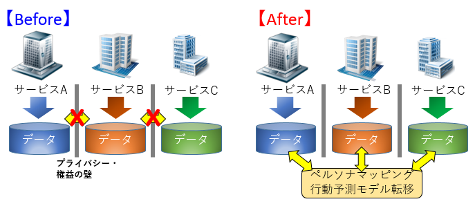
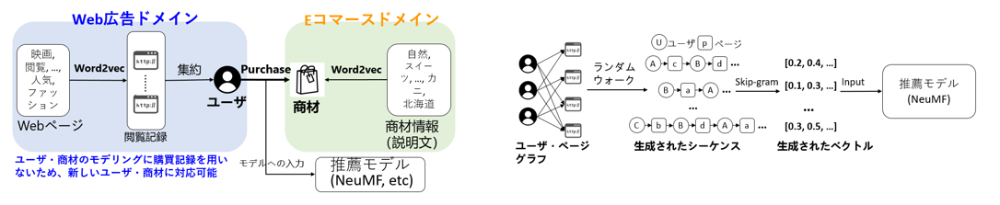
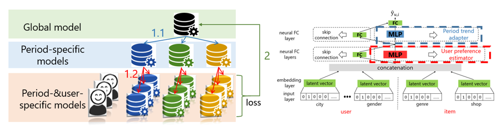
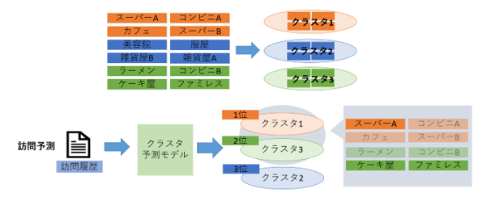

異種サービスを繋ぐAIマーケティング¶
研究背景¶
AIマーケティングとは，「AI技術を活用してユーザの行動パターンの予測により、高品質なペルソナサービスを提供する」ものであり，本研究ではマーケティングのAI化を推進する．例えば，Eコマース商品の購買予測や実世界店舗の訪問予測などのユーザ（ペルソナ）モデルでによってユーザの体験と業者の利益の向上を促進する．しかし，実世界にはプライバシや権益などの問題で各サービス事業者で構築されたユーザ（ペルソナ）モデルの共有は困難である．故に，本研究グループは異種サービスをつなぐプライバシ保護を考慮したAIマーケティング技術の実現を目指している．特にプライバシや権益などの問題に対応するために，「データ共有なし」という前提を研究の中に取り込んでいる．そして，既存のクロスドメイン研究と異なり，「特徴が全く異なる異種ドメイン」を想定し，ドメイン間の行動予測の転移技術の開発に挑む．

研究内容¶
本研究グループは協調フィルタリング，深層学習，敵対的学習，遷移学習，およびメタ学習などのAI技術を用いてユーザの分散表現（ベクトル）を学習する技術の開発やユーザの行動パターンを捉えるモデルの構築に取り組んでいる．
-
異種特徴からユーザの分散表現の学習とクロスドメイン推薦システムの構築と開発 
-
ドメイン特徴に最適化ペルソナ推薦モデルの構築と開発 
-
クラスタリングによるロングテール問題に対応した訪問予測システムの開発 
-
ラベル不均衡に着目する売り上げ予測のアンサンブル手法の開発
-
コロナ禍のユーザ行動（行動パターンの遷移）への影響分析